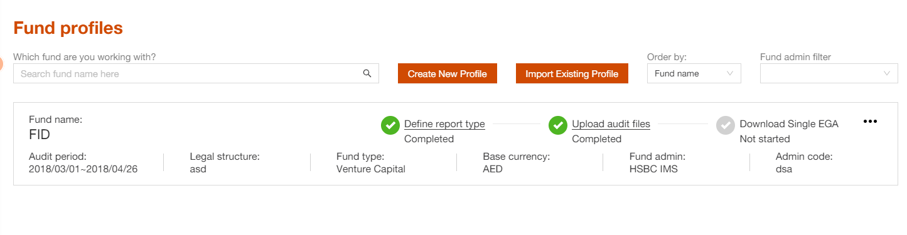
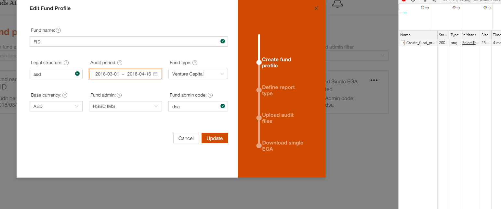
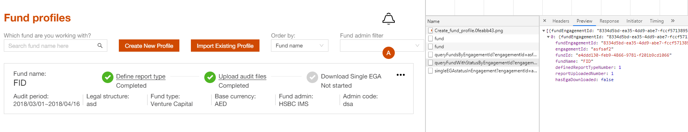
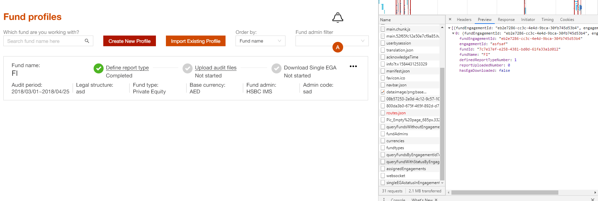
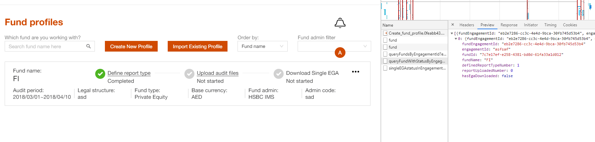
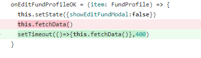

Shadow query
Shadow query issue
For AWM project, when user change audit period, then updated file will be removed. The UI should be refeshed, and the “uplpaded audit files” should be “Not Started”.
But in our project when a fund has updated file as below:

When we change audit period:

But the “uploaded audit files” status is not changed:

We could find in the network, all update are executed before the query, but the query return the wrong result.
But when we refresh the page, everything goes fine.

How to fix
Db config file
Let see the db config file:
myapp = {
database = {
...
// The number of threads determines how many things you can *run* in parallel
// the number of connections determines you many things you can *keep in memory* at the same time
// on the database server.
// numThreads = (core_count (hyperthreading included))
numThreads = 10
...
}We could see the db connection numThreads is 10. When change the number to 1.

Seems the issue is fixed.
Add some delay to the query

Why the issue happens:
Let see what’s the update and query code does:
- UpdateCode
-
private def cleanSelectionType(oldFund:Fund, newFund: Fund, fundenegagementId:String ):Future[Any]={ if(oldFund.fundAdmin != newFund.fundAdmin){ fundEngagementReportTypeSelectionDAO.deleteByEngagementId(fundenegagementId) } else if(!oldFund.auditPeriodBegin.equals(newFund.auditPeriodBegin) || !oldFund.auditPeriodEnd.equals(newFund.auditPeriodEnd) || !oldFund.baseCurrency.equals(newFund.baseCurrency)){ fundEngagementReportTypeSelectionWrite.clearUploadedReports(fundenegagementId) egaWrite.cleanEGAByFundEngagementId(fundenegagementId) }else { Future(1) } } override def update(fundEngagement: FundEngagementData): Future[Int] = { val newFundOpt = fundEngagement.fundRecord.map{ record=>Json.parse(record).as[Fund] } val oldFunFutureOpt = fundEngagementDAO.lookup(fundEngagement.id).map{ fundEngagementOpt => fundEngagementOpt.flatMap{ fundengagementTemp=>fundengagementTemp.fundRecord.map{ record=>Json.parse(record).as[Fund] } } } val cleanUpTask= oldFunFutureOpt.flatMap{ oldFunOpt=> oldFunOpt.flatMap{ oldFun=> newFundOpt.map{ newFund => cleanSelectionType(oldFun, newFund,fundEngagement.id) } }match { case Some(futureThing)=> futureThing case _=>Future(1) } } cleanUpTask.flatMap { result => val newFundTemp = newFundOpt.get val newFundFuture = fundAdminDAO.queryByFundAdmin(newFundTemp.fundAdmin).map{ tmpOpt =>tmpOpt match{ case Some(fundAdmin)=>newFundTemp.copy(fundAdminId = Some(fundAdmin.id)) case _=>newFundTemp } } val newFund = Await.result(newFundFuture, 1 second) val newFundEngagement = fundEngagement.copy(fundRecord = Some(Json.toJson(newFund).toString())) fundEngagementDAO.update(newFundEngagement) } } - QueryStatus
-
override def queryFundReportStatus(engagementId: String): Future[Seq[FundEngagementWithStatus]] = { val sql = for ((((fundEnagements, funds), selections), ega) <- FundEngagement join Funds on ((left, right) => left.fundid === right.id && left.engagementid === engagementId) joinLeft FundEngagementReportTypeSelection on ((left, right) => left._1.id === right.fundEngagementId && right.selected === true) joinLeft Ega on ((left, right) => left._1._1.id === right.fundEngagementId)) yield { var isReportTypeDefined: Rep[Boolean] = selections.isDefined var hasReportUploadedContent = selections.map(_.uploadFileStatus === UploadFileStatus.success.toString) var hasEgaDownloaded: Rep[Boolean] = ega.map(_.generateStatus === GenerateStatus.success.toString).getOrElse(false) (fundEnagements.id, fundEnagements.engagementid, fundEnagements.fundid, funds.name, isReportTypeDefined, hasReportUploadedContent, hasEgaDownloaded) } for { result <- db.run(sql.result).map(rows => rows.collect { case dataRow => (FundEngagementWithStatusBoolean.apply _).tupled(dataRow) }) } yield { var sqlResult = result.map(item => { var definedReportTypeNumber = if(item.isReportTypeDefined) 1 else 0 var reportUploadedNumber = if(item.hasReportUploadedPath == Some(true)) 1 else 0 FundEngagementWithStatus(item.fundEngagementId,item.engagementId, item.fundId, item.fundName, definedReportTypeNumber, reportUploadedNumber, item.hasEgaDownloaded) }) var combineStatus = Seq[FundEngagementWithStatus]() for(status <- sqlResult){ if(combineStatus.find(_.fundEngagementId == status.fundEngagementId).isEmpty){ // has put into combineStatus sequence var statusWithSameFundEngagementId: Seq[FundEngagementWithStatus] = sqlResult.filter(_.fundEngagementId == status.fundEngagementId) var definedReportNumbers:Int = 0 var uploadedReportNumbers:Int = 0 var hasEgaDownloaded:Boolean = true for(fundStatus <- statusWithSameFundEngagementId){ definedReportNumbers = definedReportNumbers + fundStatus.definedReportTypeNumber uploadedReportNumbers = uploadedReportNumbers + fundStatus.reportUploadedNumber hasEgaDownloaded = hasEgaDownloaded && fundStatus.hasEgaDownloaded } combineStatus = combineStatus :+ FundEngagementWithStatus(status.fundEngagementId, status.engagementId, status.fundId, status.fundName, definedReportNumbers, uploadedReportNumbers, hasEgaDownloaded) } } combineStatus } }
0.1.0*